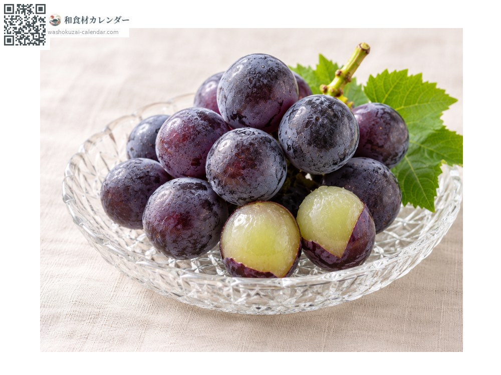
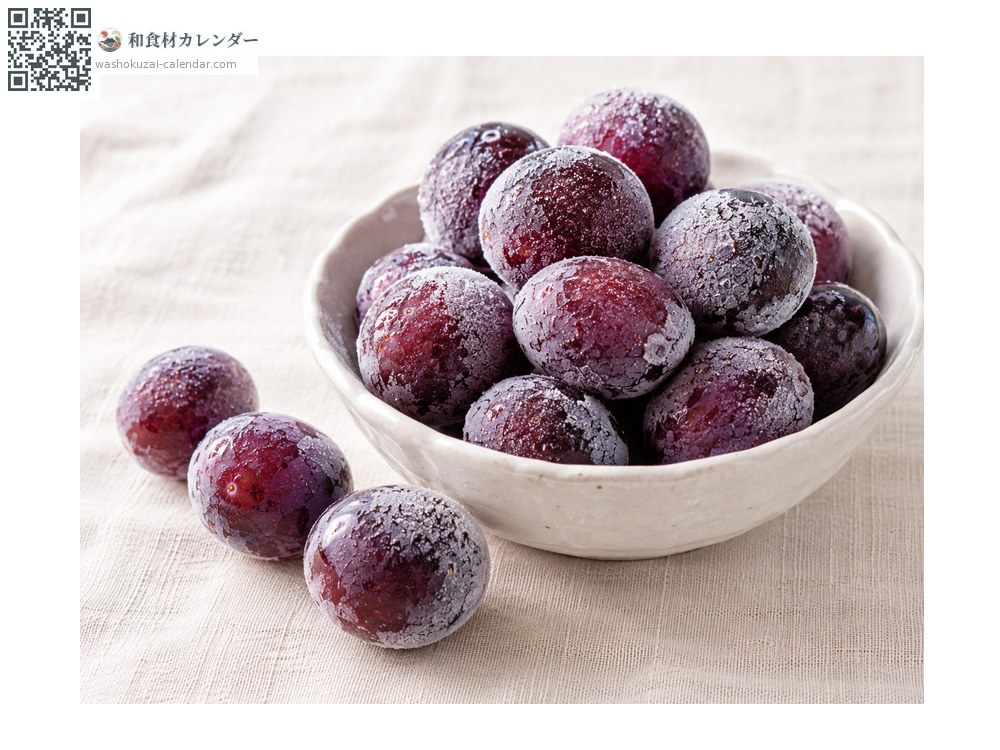
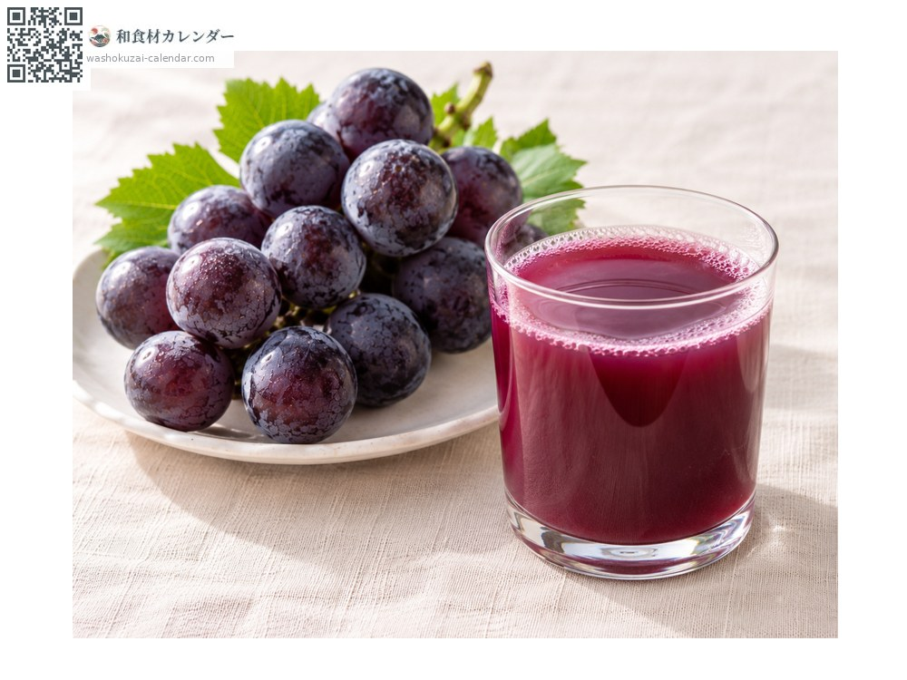
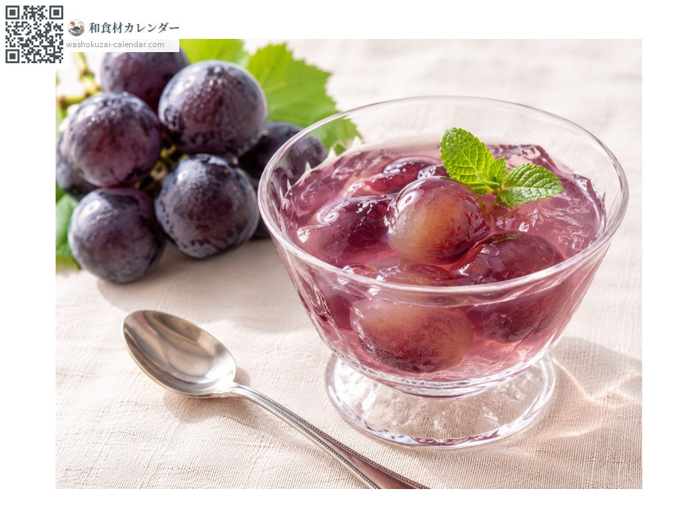

Fruit
Kyoho grape
巨峰 きょほう kyoho
Also known askyoho, kyohou, budo, budou
At its best in Aug, Sep

When it is at its best
Jan
Feb
Mar
Apr
May
Jun
Jul
Aug
Sep
Oct
Nov
Dec
In seasonAvailable
How to cook

Eaten fresh
Peeled and eaten; the berries are large and satisfying.

Frozen
Peeled, frozen and eaten half-thawed.

Juice
Pressed with the skins for a deep purple.

Jelly
Peeled berries set in agar or gelatine.
How to choose
Large berries coloured deep purple-black with a white bloom, on a thick green stem.
Storage
Bag unwashed and refrigerate. Keep the bunch intact and eat it soon.
Main areas
Good to know
Raised in Shizuoka by Yasushi Oiue and announced in 1942. The name is said to come from the great peak of Mount Fuji. The size of the berries earned it the title king of grapes. The white dust on the skin is bloom, a sign of freshness, not spray.